論文Figureの作成に特化した、ブラウザ完結型ベクターエディタ。
Illustratorの複雑さを排除し、研究者に必要な機能だけを凝縮しました。
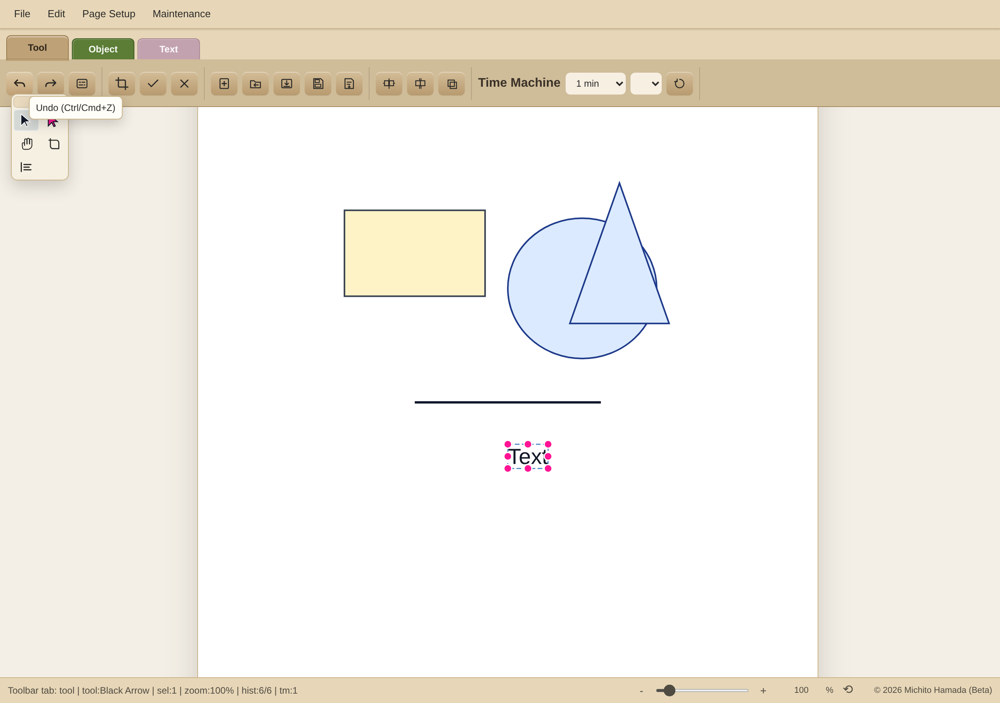
Adobe Illustratorの操作感はそのままに、論文Figure作成に必要な機能を厳選しました。
Adobe Illustrator (.ai) ファイルをブラウザにドラッグするだけで取り込めます。既存の論文Figureデータをそのまま活用でき、SVGやPDFファイルも同様にインポート可能です。
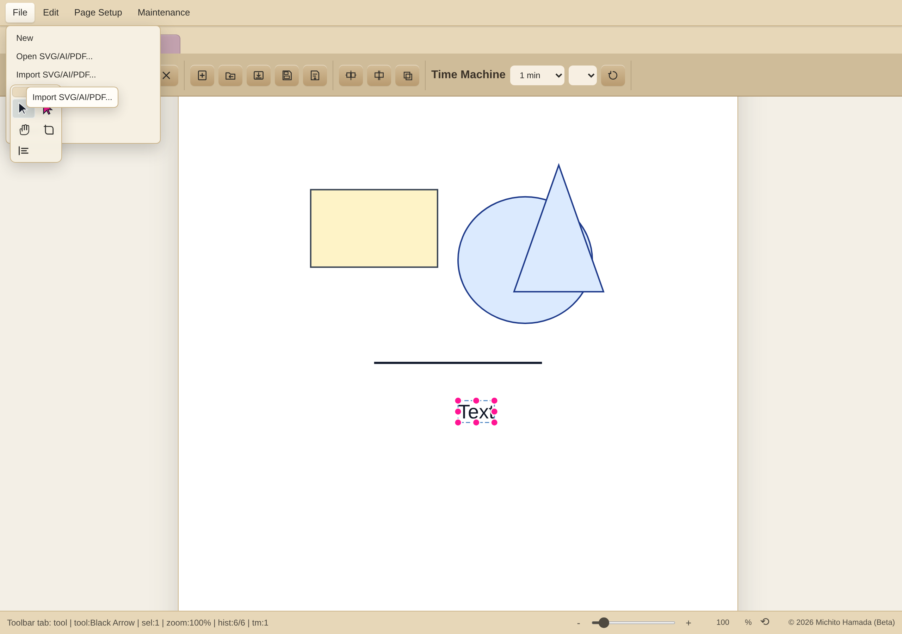
グループ化された要素を無視して、個別のオブジェクトを直接選択・編集できます。Illustratorの白矢印ツールに相当する機能で、複雑なFigure内の個別要素を素早く操作できます。
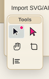
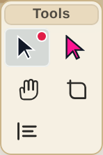
1分・10分・30分の間隔で自動的にスナップショットを保存。ブラウザが閉じても作業状態を復元でき、過去のバージョンをリストから自由に選んで戻せます。IndexedDBベースで大容量画像にも対応。
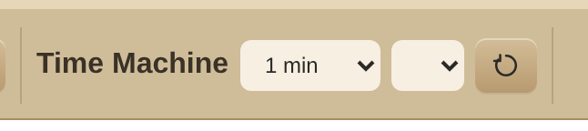
作成したFigureをPDF形式で即座に書き出し。論文投稿やレビュー用に最適なベクターPDFを生成します。もちろんSVG保存も可能で、再編集にも対応。
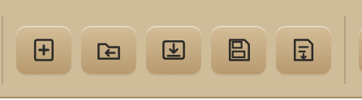
左揃え、中央揃え、等間隔分布など6方向の整列と2軸の分布機能。さらにスマートガイドがリアルタイムでスナップポイントを表示し、美しいレイアウトを直感的に作成できます。
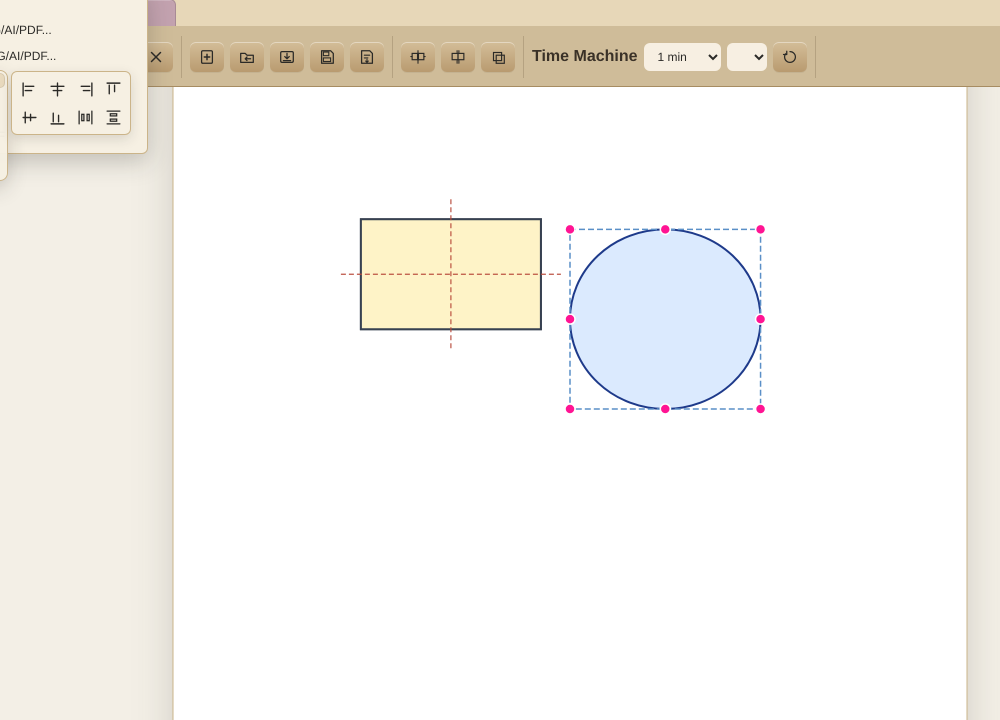
3ステップで論文Figureを作り始められます。
インストール不要。URLにアクセスするだけで、すぐに使い始められます。
.ai / .svg / .pdf ファイルやクリップボード画像をドラッグ&ドロップまたはペーストで追加。
ダイレクト選択・整列・矢印変換などで仕上げたら、PDF/SVGでエクスポート。
研究者の実作業フローに合わせた便利機能を多数搭載しています。
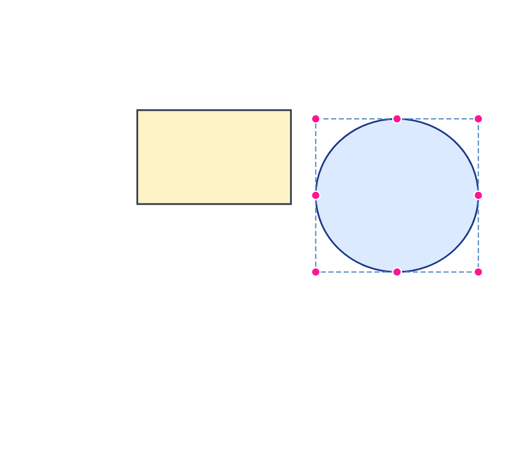
矩形、楕円、直線、三角形、テキストをワンクリック追加。矢印変換（Apply Arrow）で線を即座にアローヘッドへ。
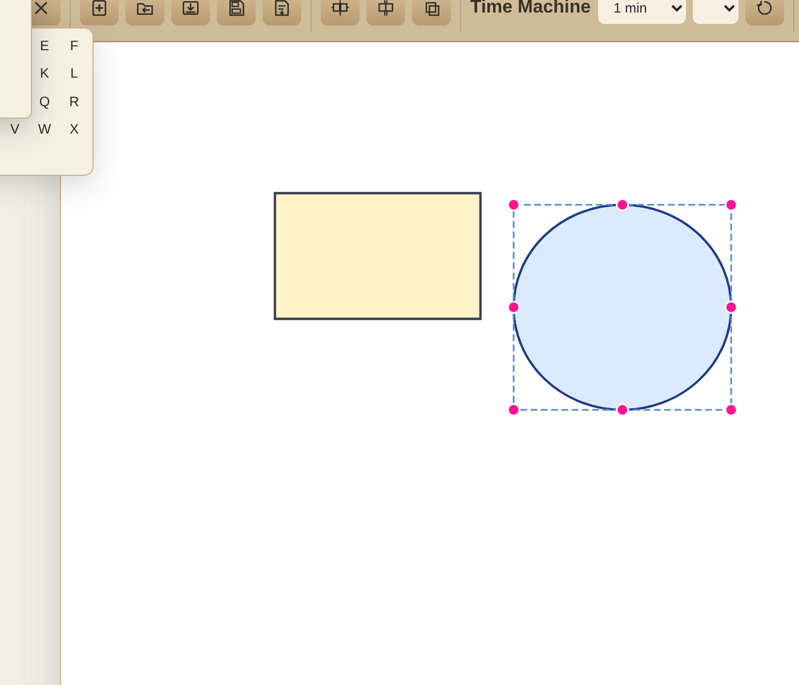
右クリックメニューからFigureパネルラベル（A, B, C...）を付与。Copy/Cut/Paste/Group/Duplicateにも素早くアクセス。
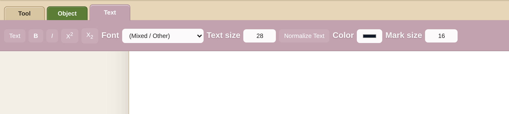
テキストの追加・太字・フォントサイズ変更。ダブルクリックでインライン編集。Figure Title / Figure Numberも対応。
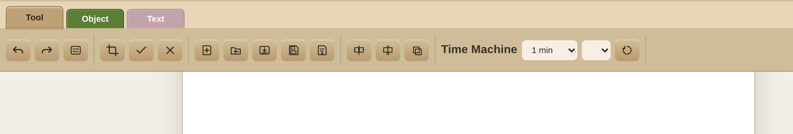
Undo/Redo（最大30段階）、クロップ、ファイル操作、グループ化、Time Machineが一画面に。
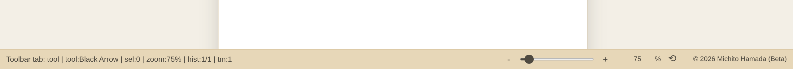
スライダー + Ctrl/Cmd+ホイール + ピンチでズーム。現在のツール、選択数、履歴位置をリアルタイム表示。
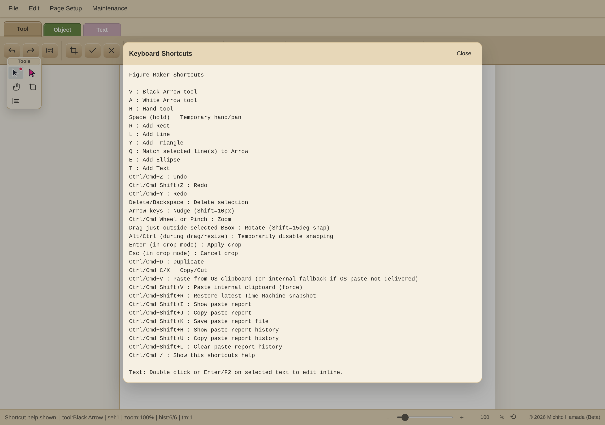
Ctrl/Cmd+/ で全ショートカットをすぐ確認。Illustrator風の操作体系（V, A, H, R, E, L, T, Q等）。
Illustrator風の操作体系で直感的に操作できます。
はい、完全に無料です。アカウント登録やクレジットカード情報も一切不要です。ブラウザでアクセスするだけですぐにお使いいただけます。
すべてのデータはお使いのブラウザ（IndexedDB / localStorage）にローカル保存されます。外部サーバーにデータが送信されることはありません。Time Machine機能で自動バックアップも取れます。
はい。.aiファイルをブラウザにドラッグ&ドロップするか、File > Open/Import メニューから取り込めます。内部のSVG互換部分が読み込まれ、編集可能になります。
SVG形式での保存と、PDF形式でのエクスポートに対応しています。SVGはベクター形式なので再編集が可能、PDFは論文投稿やプレゼンテーションに最適です。
Time Machine機能をONにしておけば、ブラウザを閉じてもIndexedDBにスナップショットが保存されています。次回アクセス時にMaintenance > Restore Latest Time Machineから復元できます。
Google Chrome、Microsoft Edge、Firefox、Safariなど、モダンブラウザで動作します。最新版のChrome / Edgeを推奨します。
はい。TIFF画像をドラッグ&ドロップまたはペーストすると、自動的にPNG形式に変換されて取り込まれます。顕微鏡画像などのTIFFファイルもそのまま利用可能です。